>
'Eastwards their homes, Westwards their future'
Final Report: Digital Approaches to Historical Inquiries
Name: Pepijn Roos, Professor: Dr.A. Mol, Date of submission: 09-05-2018
Introduction
The Second World War displaced around 30 million Europeans. Most of these displaced persons originated from Poland and the former USSR. In the wake of the retreating German army, communist authorities had established their rule over Eastern Europe. Harsh regimes rose to power. They discriminated social groups based on religion and ethnicity. Authorities also suspected these groups of collaboration with Nazi-Germany during the war. Refugees therefore risked deportation and forced labour when returning to their countries of origin.
At first the refugees were sent back home, but forced repatriation ended during the winter of 1945-1946. By that time American and British officials realized the disastrous repatriation to the ‘worker’s paradise’. The refugees didn’t want to go back to their original country, out of fear for persecution. They stayed in their refugee camps in Germany and Austria. Conditions were often abysmal. One of the residing groups were the Mennonites, an old sect of Anabaptist religion. Stuck in the camps, a Dutch priest named Hylkema, decided to relieve the refugees. He illegally led a group of 400 mennonites across the Dutch border. The government wouldn’t allow trespassing and demanded the group to emigrate to countries as Paraguay, Canada and the United States. This eventually happened and the Netherlands became a transport hub for thousands of Mennonites and other displaced persons seeking refuge elsewhere.
The International Refugee Organization (IRO) was an Intergouvernemental organisation founded in the wake of the Second World War. The organisation, of which the Netherlands were also part, managed the transport of refugees such as the Mennonites. Every country had its own IRO headquarter and representatives. They created lists of refugees and their departure for their new homelands. These countries were often located across the ocean: Canada, South-Africa, Australia, New Zealand, the United States and a range of Southern-American countries. Could digital tools enable and provide new insights in postwar transatlantic migration?
Goals of the project
Although some attention is given to these groups in academic literature, readily available information is scarce. The reason for this could be found in the fact that the decade of 1945-1956 is generally undervalued in Dutch migration history. Besides that, attention has been given to the legal side of migration and not to the persons or the movement themselves. This historical inquiry project therefor has three goals. The first goal focuses on the shipping transports of emigrants to above mentioned places. Where did displaced persons, departing from the Netherlands, go and how big were these transports? How can we properly visualize their movement and their background? Linked to this, is the second goal. What digital tools could be used for this data visualization? Dutch historiography already focussed for two centuries on migrant history. However, only in the past decade did researchers diversify their research. Besides the economical, juridical and demographical viewpoint, new perspectives were added: gender, social background, globalization. Within this renewal, there should be room for digital tools and data visualization to achieve new results. The third goal is to share information and results according to the FAIR guiding principles.
Data
What data and tools are used for this project? There are multiple genealogical and statistical projects online about migration to the New World. Also online is an American database on immigration via Ellis Island. However, the database ends at 1924 and is only applicable for migrants who travelled via New York. Large online datasets about refugees are not available. For more useful sources the author has accessed the traditional archives. The National Archives (Nationaal Archief) in Den Haag harbours the archives of the IRO. In these archives extensive lists of refugee passengers and ship movement can be found. Much of the information touches upon financial and organizational problems. However, plain lists are also included (Fig 1.).
The author manually transcribed these lists into digital Excel spreadsheets. It took two days processing everything, but the results are two datasets. One minor dataset depicts the 54 ships which were chartered by the IRO to transport refugees to their final destinations throughout 1951 and early 1952 (Fig 2.). By choosing these years, a selection was made. One of the most interesting ship chartered in this time period was the the USNS General S.D. Sturgis, an American naval ship leaving Bremerhaven for Halifax with 1303 refugees on board. The second list contains information on the passengers of this individual transport (Fig 3.). Name, sex, religion, marital status, age and birth place were all included. The author chose to also touch upon more personal information to compare the visualization of transports with in-depth data on the refugees themselves.
Tools
After the digital database was created, tools could be used to visualize and eventually analyze the data. First of all, the ‘ship movement’ visualizations should be mentioned. Using the just released version of QGIS (3.0) to georeference an early 20th century Atlantic map by J.G. Bartholomew (Fig 14.) on a thematic map, the foundation for a visualization was created. The author wanted to experiment if georeferenced maps enhanced the project. The thematic map depicted countries of origin of the refugees, the countries in which they stayed in camps and their final destinations. Eventually a trade-off was created between esthetics (using old maps) and pragmatism (using thematic maps).
After the georeferenced map was created, data could be put into the visualization. For this purpose, Processing was used. Processing is a flexible, open access software sketchbook. The processing language Python was used to help the author write the code. Last semester the author experienced some basic coding in Processing. This semester, these techniques were refined. Some of the basics of the code were provided by Dr. P.A. Vierthaler, but the input was produced by the author (Fig 16.) Using lines, moveable objects and PVectors the ship movement could be visualized. This was achieved for both the individual journey of the S.D. Sturgis and the list of ships (Fig. 13 and Fig. 15).
At first Excel was used to visualize the information of the individual passengers. This way interesting pie chart visualizations could be created depicting the sex, marital status, age, religion and country of birth (Fig.4, Fig.5, Fig.6, Fig.7 and Fig.8). After this it would be highly useful to map the birthplaces of every individual. This was done by Processing and painful manual research (Fig. 12). The names of villages and towns were littered with spelling mistakes and old names were frequently mentioned (for instance: Tsaritsyn for Stalingrad, the current Volgograd), which made localization by algorithm difficult. The author could manually trace 966 out of 1303 places. Three maps were created: female, male and all (Fig. 9, Fig. 10 and Fig. 11). Up to the knowledge of the author, individual mapping of such information has never occurred before in historical research.
Dissemination
For the author, a truly new addition to this project was the open access sharing of datasets and results. Using the FAIR guiding principles, the dataset, report and visualization are digitally disseminated via my own Github page and Stack storing. Using this media, the author made sure others could check his research and methodology. Besides that, the datasets could be used by others for their own projects. Although Github pages is not the most ideal place for data sharing, a basic lay-out was preferred over barring my research data for the public. The focus of the author has not touched upon the aesthetics of this page. This should be kept in mind when judging the Github page.
Conclusion
Combining ‘traditional’ data, digital tools and and an open-access guideline, this project has achieved its three goals. Firstly, it contributed to the academic debate about migration by providing mapped visualizations which enable new ways of data analysis. Secondly, a modern way of research was conducted, using a range of new and interesting tools. The author hopes to have paved the way for the involvement of more digital tools in the future. Third, all data and results were made accessible. This way, the painful days of manual transcription do not go waisted. Every interested person will be encouraged to deliver critical feedback and comments. The project only focuses on a tiny part of refugee movement after World War Two. In the end, it would be amazing to extensively map and share the movement of 30 million displaced persons.
Annex
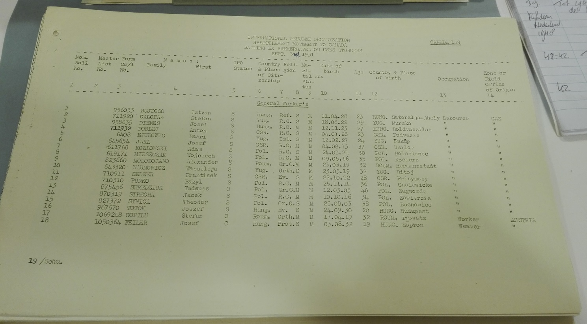
Fig. I: Example of an archival source, source: National Archives, inventory number 2.05.31, inventory of the Dutch IRO, 1947-1953, 172, inventory of the USS General S.D. Sturgis, voyage 1951, passenger list, page 1.
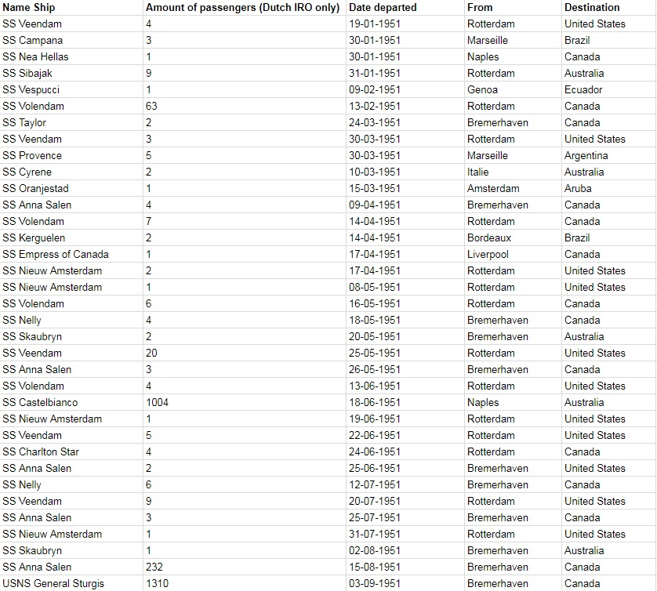
Fig. II: Start of the list of ships hired by the Dutch IRO to sail refugee’s to their new home countries, source: National Archives, inventory number 2.05.31, inventory of the Dutch IRO, 1947-1953, 172-174, shipping lists.
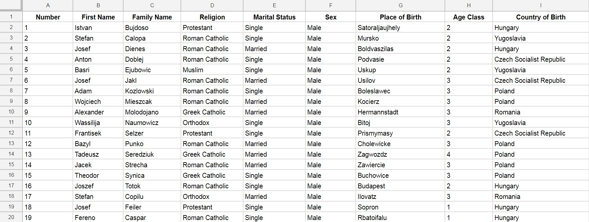
Fig. III: Start of the list of passengers on the General S.D. Sturgis en route between Bremerhaven and Halifax, list made up by IRO officers, source: National Archives, inventory number 2.05.31, inventory of the Dutch IRO, 1947-1953, 172, inventory of the USS General S.D. Sturgis, voyage 1951, passenger list.
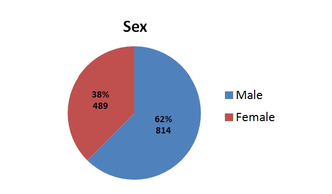
Fig. IV: Pie Chart based on the sex-ratio of the passengers of the S.D. Sturgis, source: National Archives, inventory number 2.05.31, inventory of the Dutch IRO, 1947-1953, 172, inventory of the USS General S.D. Sturgis, voyage 1951, passenger list.
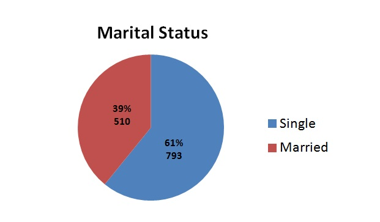
Fig. V: Pie Chart based on the marital status of the passengers of the S.D. Sturgis, source: National Archives, inventory number 2.05.31, inventory of the Dutch IRO, 1947-1953, 172, inventory of the USS General S.D. Sturgis, voyage 1951, passenger list.
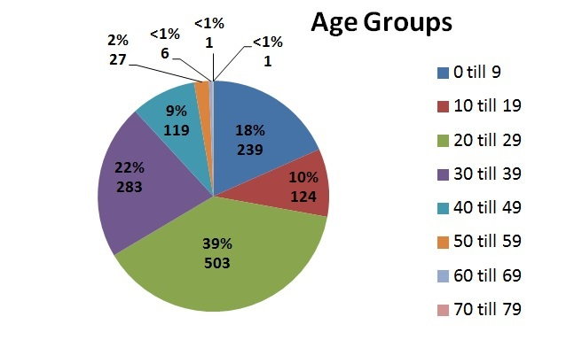
Fig. VI: Pie Chart based on the age groups of the passengers of the S.D. Sturgis, source: National Archives, inventory number 2.05.31, inventory of the Dutch IRO, 1947-1953, 172, inventory of the USS General S.D. Sturgis, voyage 1951, passenger list.
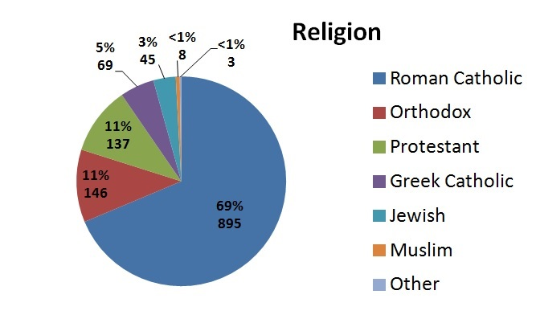
Fig. VII: Pie Chart based on the religion of the passengers of the S.D. Sturgis, source: National Archives, inventory number 2.05.31, inventory of the Dutch IRO, 1947-1953, 172, inventory of the USS General S.D. Sturgis, voyage 1951, passenger list.
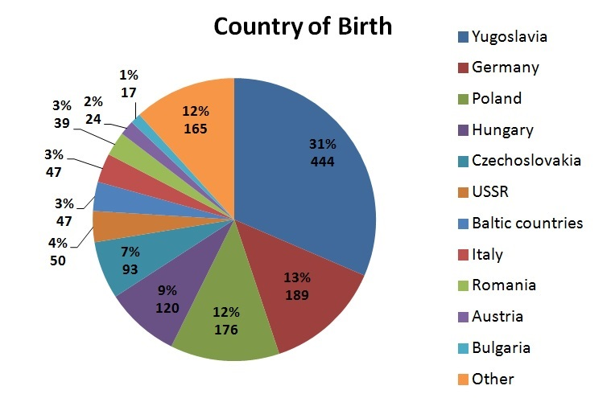
Fig. VIII: Pie Chart based on the country of birth of the passengers of the S.D. Sturgis, source: National Archives, inventory number 2.05.31, inventory of the Dutch IRO, 1947-1953, 172, inventory of the USS General S.D. Sturgis, voyage 1951, passenger list.
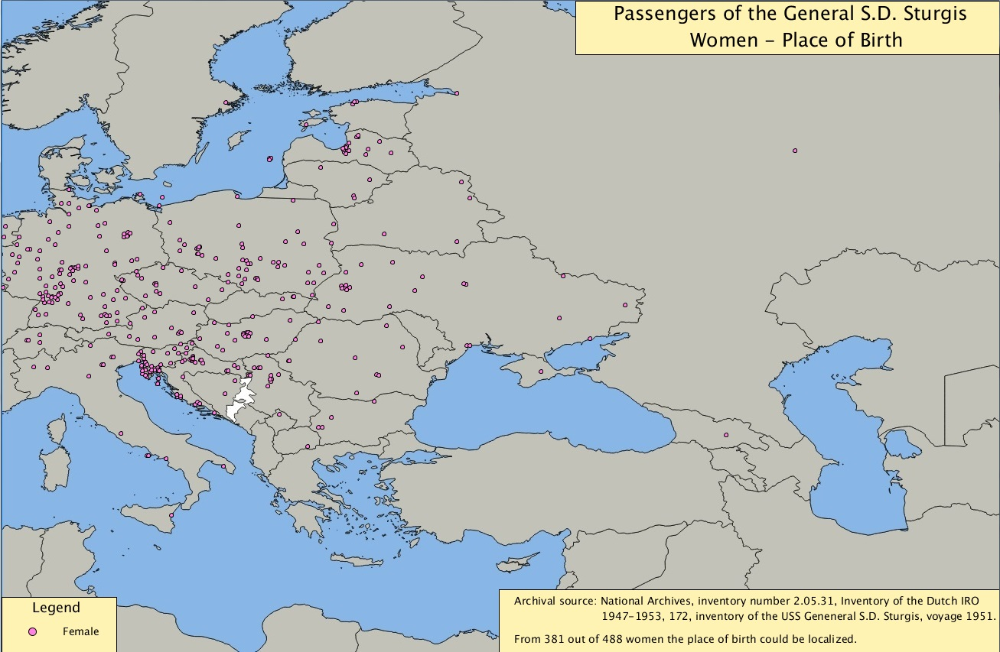
Fig. IX: Processing Visualization depicting the birth places of 381 out of 488 female passengers of the S.D. Sturgis, source: National Archives, inventory number 2.05.31, inventory of the Dutch IRO, 1947-1953, 172, inventory of the USS General S.D. Sturgis, voyage 1951, passenger list.
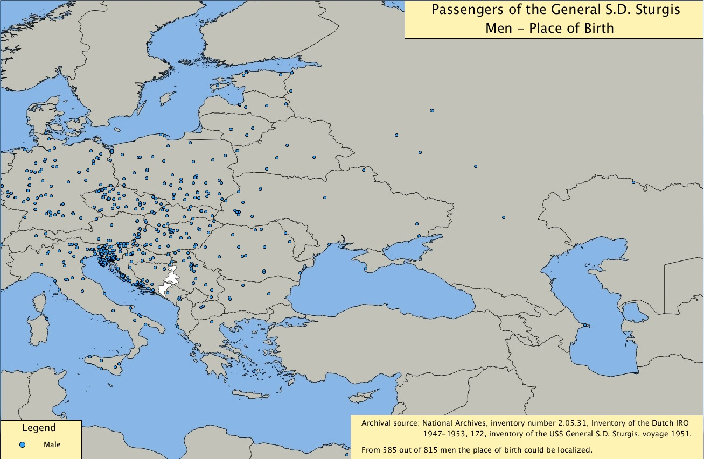
Fig. X: Processing Visualization depicting the birth places of 585 out of 815 male passengers of the S.D. Sturgis, source: National Archives, inventory number 2.05.31, inventory of the Dutch IRO, 1947-1953, 172, inventory of the USS General S.D. Sturgis, voyage 1951, passenger list.
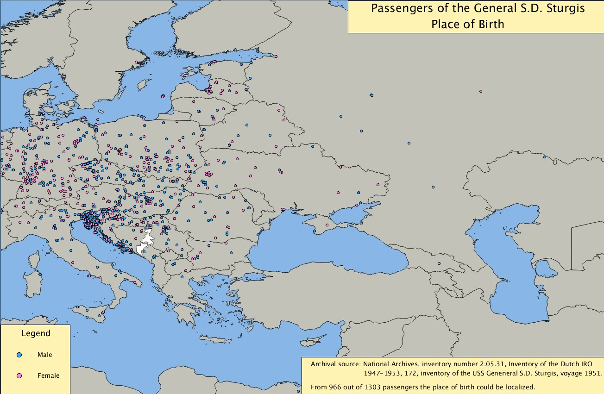
Fig. XI: Processing Visualization depicting the birth places of 966 out of 1303 passengers of the S.D. Sturgis, source: National Archives, inventory number 2.05.31, inventory of the Dutch IRO, 1947-1953, 172, inventory of the USS General S.D. Sturgis, voyage 1951, passenger list.
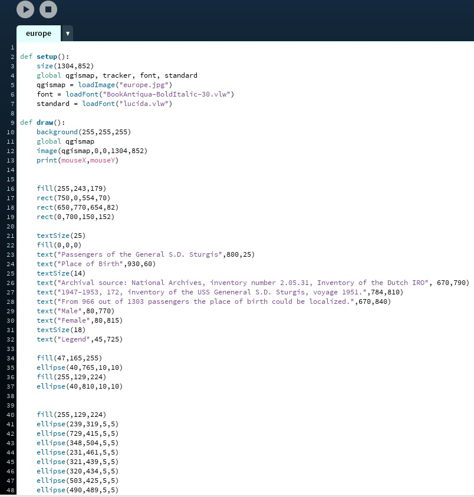
Fig. XII: Example of the Processing code about the visualizations on the birthplaces of the passengers of the S.D. Sturgis, source: National Archives, inventory number 2.05.31, inventory of the Dutch IRO, 1947-1953, 172, inventory of the USS General S.D. Sturgis, voyage 1951, passenger list.

Fig. XIII: Processing Visualization depicting the shipment of Dutch IRO refugees by individual ship, source: National Archives, inventory number 2.05.31, inventory of the Dutch IRO, 1947-1953, 172-174, lists of ship movement.
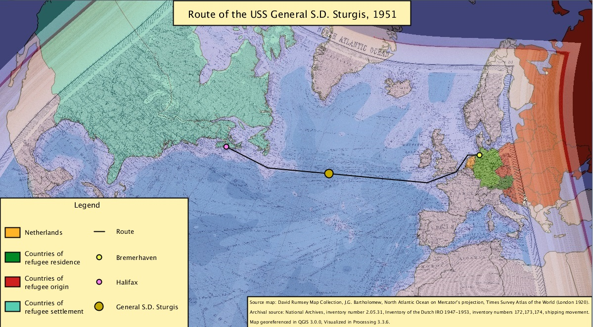
Fig. XIV: J.G. Bartholomew, ‘North Atlantic Ocean on Mercator's projection’, Times Survey Atlas of the World (London 1920), 81.
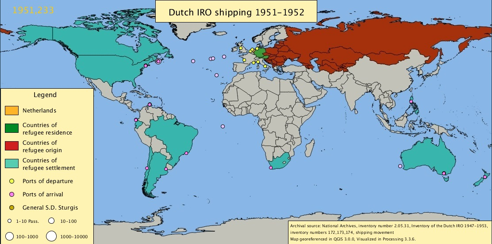
Fig. XV: Processing Visualization depicting the route of the S.D. Sturgis, source: National Archives, inventory number 2.05.31, inventory of the Dutch IRO, 1947-1953, 172, inventory of the USS General S.D. Sturgis, voyage 1951.
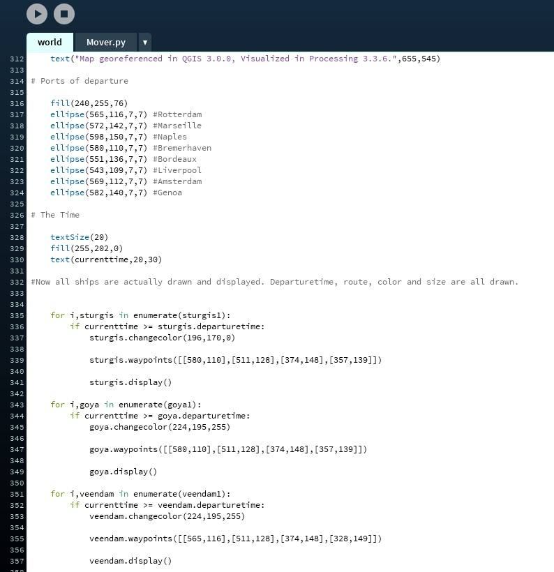
Fig. XVI: Example of the Processing code about the visualizations on shipping movement, source: National Archives, inventory number 2.05.31, inventory of the Dutch IRO, 1947-1953, 172-174, lists of ship movement
Sources
Berghuis, C., Geheel ontdaan van onbaatzuchtigheid: Het Nederlandse toelatingsbeleid voor vluchtelingen en displaced persons van 1945 tot 1956 (Amsterdam 1999).
Centrum voor de geschiedenis van migranten (CGM), http://www.vijfeeuwenmigratie.nl/cgm, as accessed on 19-03-2018.
G.G. Archives, ‘Ship Passenger Lists (1880s-1954) to USA, Canada, Australia and other Worldports’, https://www.gjenvick.com/PassengerLists/#axzz3SwJt50VZ, as accessed on 19-03-2018.
Hobbs, R., Copyright clarity. How fair use supports digital learning (Thousand Oakes, CA, 2010).
Kramer, M., ‘Stalin, Soviet policy, and the establishment of a communist bloc in Eastern Europe, 1941-1948’, in: T. Snyder en R. Brandon (eds.), Stalin and Europe, imitation and domination, 1928-1953 (Oxford 2014) 264-294.
Library and Archives Canada, ‘Immigration records’, https://www.bac-lac.gc.ca/eng/discover/immigration/immigration-records/Pages/introduction.aspx#a, as accessed on 19-03-2018.
Mazzone, J. Copyfraud and other abuses of intellectual property law (Palo Alto, CA, 2011).
National Archives, inventory number 2.09.5026, Inventaris van het archief van het Ministerie van Justitie: Beleidsarchief Immigratie- en Naturalisatiedienst (IND) [periode 1945-1955], 1945- 1955.
Number 2293: Mennonieten 1945-1959.
National Archives, inventory number 2.05.31, Inventaris van het archief van de Nederlandse Gedelegeerde van het Intergovernmental Committee on Refugees, 1945-1947; Vertegenwoordiger van de International Refugee Organization (IRO) in Nederland 1947-1953.
Number 13: Mennonieten: verzoek van Russische mennonieten als emigranten naar Paraguay om steun met beroep op de Nederlandse herkomst van hun voorgeslacht 1947-1949.
Number 170: Lijsten van migranten, 1947-1951.
Number 171: Scheepspassages, algemeen 1947-1951.
Number 172-174: "Shipping", Dossiers opgemaakt van passagiers uit
Bremerhaven en Rotterdam per vertrekkend schip 1951 .
Number 175: Canada, algemeen: emigratietransporten 1948-1951.
Number 176: Dossiers ‘Shipping’, 1947-juni 1949.
Number 176a: Dossiers ‘Shipping’, juli 1949-1950.
Obdeijn, L.M. en M. Schrover, Komen en Gaan. Immigratie en Emigratie in Nederland vanaf 1550 (Amsterdam 2008).
Postma, F.H., ‘Mennonieten tussen vrijheid en dictatuur. Nederlands-Russische onenigheid in de spiegel van naoorlogse repatriëringsbeleid’, Doopsgezinde Bijdragen 26 (2001) 111-120.
Postma, F.H., De repatriëring van Sovjetonderdanen uit Nederland, 1944-1956 (Amsterdam 2003).
Processing, https://processing.org/, as accessed on 19-03-2018.
QGIS 3.0, http://blog.qgis.org/2018/02/23/qgis-3-0-girona-is-released/, as accessed on 19-03-2018.
Roos, P., ‘Eastwards their homes, westards their future’, https://pepijnroos.github.io /pepijninquiry.github.io/, as accessed on 06-05-2018.
Schrover, M., ‘Dutch migration research: looking back and moving forward’, Tijdschrift voor Sociale en Economische Geschiedenis 11: 2 (2014) 199-218.
Schrover M. and T. Walaardt, ‘Displaced Persons, returnees and ‘unsuitables’: the Dutch selection of DPs (1945-1951)’, to be printed.
The Statue of Liberty - Ellis Island foundation inc., ‘Passengers’,
https://www.libertyellisfoundation.org/passenger search, as accessed on 19-03-2018.
Tolstoy, N., Victims of Yalta (London 1977).
Wilkinson, M.D, et al., ‘The FAIR Guiding Principles for scientific data management and stewardship’, Scientific Data (2016) https://www.nature.com/articles/sdata 201618, as viewed 19-03-2018.